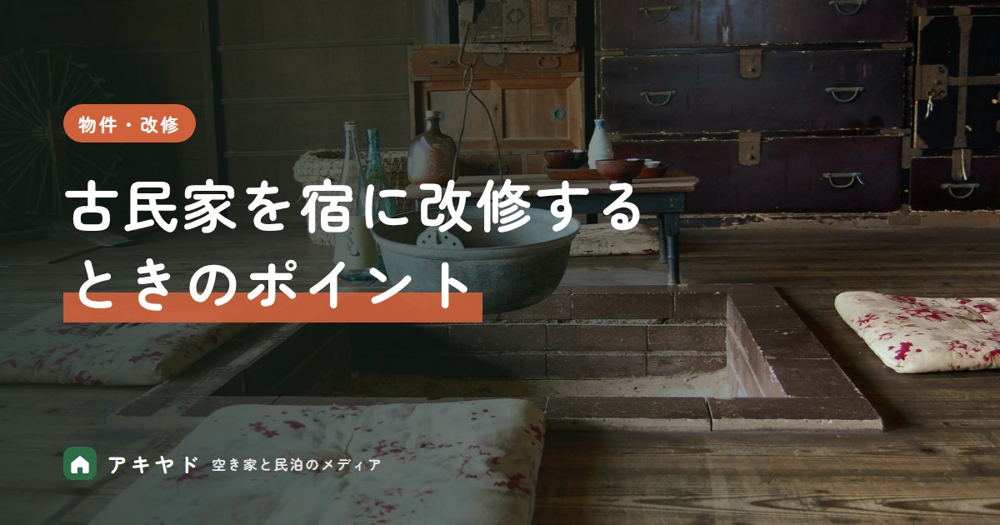

古民家を宿に改修するポイント｜残すもの・変えるもの、断熱・水回り・耐震
公開日
更新日
読了目安 約4分
執筆：アキヤド編集部
監修：石原 佑真

古民家を宿として再生するとき、梁や建具などの魅力を残しながら、快適さと安全性を高める改修が求められます。残すもの・変えるものの考え方と、断熱（寒さ対策）・水回り・耐震（地震への強さ）など優先して考えたい点を解説します。
この記事のポイント
- 築古の一軒家でも、工事費410万円ほどで宿にできた例があります。下田市の宿の改修で、築古の賃貸の一軒家を宿にした一例です。古民家の相場ではありません。
- 古い配線の家は、工事の前に電気の容量を確かめます。下田の宿の二芯（電線2本の古い方式）の配線では、エアコン・冷蔵庫・電子レンジを同時に使うと足りない場面がありました。電気の容量を増やす3芯化の工事は費用がかかるため、早めの確認が必要です。
- 1981年5月31日以前の建物は、耐震診断を考えます。この年代の建物は旧耐震基準（古い耐震基準）で建っています。国土交通省は、地震に耐えられるかを調べる耐震診断を勧めています。
- 使い道を変える部分が200㎡以下なら、建築確認を省ける場合があります。工事前の役所の審査が不要になりました（2019年6月から）。旅館業の許可と消防の基準は別に必要です。
何を残して何を変えるかは、解体して中を見てから決められる？
古民家の宿の魅力は、新築では出せない時間の積み重なりにあります。ただ、残せるかどうかは、壁や床を開けてみないと分かりません。
改修の前に決める「残すもの」と「変えるもの」
残すもの
時間が生む魅力
- 太い梁や柱、吹き抜け
- 土間・縁側・囲炉裏
- 格子戸・欄間などの建具
- 庭や周辺の景色
変えるもの
快適さと安全
- 浴室・トイレ・キッチン
- 断熱・すきま風対策
- 照明・コンセント・Wi-Fi
- 耐震性・防火性
私たち創業メンバーが下田市で宿を開業したとき、工事費を抑えるために、間仕切り・押し入れ・古い洗面所を自分たちで解体しました。壊してみると、梁（屋根を支える横木）・柱・下地（壁や床の内側の骨組み）の状態が分かり、設計や家具の手配の精度が上がりました。
この宿は古民家ではなく、下田市の賃貸の物件です。和室を、外国人の長期滞在向けの洋室に改修しました。それでも、「残す・変える」は壊してから決めるほうが外れにくい、という点は古い家に共通します。
水回りと寒さは、どこまで直すのが現実的？
水回りは、古い洗面所の解体で下地が見えたように、壁の中を見てから交換する範囲を決めるのが確実です。見えないまま見積もると、開けたあとの追加工事になりやすくなります。
寒さも同じで、断熱は床・壁・天井の中の状態で工法が変わります。長く過ごす寝室や居間から優先し、内窓（今の窓の内側に足す窓）の設置などは見た目を変えずに足せます。
遠方からの工事の進め方は、「遠方からの改修工事の進め方」で説明しています。
改修費はいくらかかる？追加請求にはどう備える？
築古の一軒家でも、工事費410万円ほどで宿にできた例があります。私たちの下田市の宿（賃貸の一軒家）は、改修工事が約410万円でした。ほかに家具・家電・備品が約240万円です。解体の一部を自分たちで行った分も含む一例で、古民家の改修費の相場ではありません。
工務店は3社から見積もりを取り、見積額がいちばん低かった会社に発注しました。補助金の要項に「市内の工務店との契約」が求められていたため、見積もりの結果と照らして判断しました。
工事が終わって支払いをしたあとに、想定外の追加請求がありました。相談のうえ、一部の支払いにとどめています。学んだのは、やりとりを文書で残すことと、構想を最初に言語化して工務店と共有することです。結果として、追加分を含めた支払いは他社の見積もりと大差がなくなりました。
古民家の改修に使える補助の例として、兵庫県の「古民家再生促進支援事業」があります。宿泊体験施設なども対象で、補助額は対象経費で決まります。
※ 2026年10月時点の兵庫県の公式ページの記載です。改修後に一定の耐震性を確保すること、10年以上活用すること、市町からも補助を受けることが要件で、令和8年度の受付は終了しています。ほかの地域の制度は、所在地の自治体で確認してください。
古い家の電気配線は、工事の前に何を確かめる？
古い配線の家は、工事の前に電気の容量を確かめます。築古の賃貸住宅だった私たちの宿では、配線が二芯（単相2線式：電線2本の古い方式）のままで、エアコン・冷蔵庫・電子レンジを同時に使うと制約が出ました。ゲストには同時使用を控えてもらう案内を出して運用しています。
3芯にして電気の容量を増やす工事は費用がかかります。あとから分かると資金計画に入っていないため、物件を決める前、遅くとも設計の段階で配線の状態を確認しておくのが安全です。
耐震は、いつの建物から診断が必要？
1981年5月31日以前の建物は、耐震診断を考えます。耐震基準は1981年6月1日に強化されました。建築時期ごとの、国が示す対応は次のとおりです（木造住宅）。
耐震が補助の条件になることもあります。兵庫県の古民家再生の補助は、改修後に一定の耐震性を確保することが要件です。
宿にするとき、建築確認や許可はどこまで必要？
使い道を変える部分が200㎡以下なら、建築確認を省ける場合があります。宿に用途変更（建物の使い道を変えること）する部分の床面積が200㎡以下なら、用途変更の建築確認（工事前の役所の審査）は不要です。2019年6月25日施行の建築基準法の改正で、100㎡から200㎡に引き上げられました。ただし、建築基準法と消防法への適合は引き続き求められます。
下田市の私たちの宿は、旅館業法の簡易宿所（旅館業の許可の種類のひとつ。客室を共用する造りも含み、小さな宿が多い）の許可を取りました。民泊新法の年180日の制限を避け、通年で営業するためです。保健所と消防署には開業の2か月前に事前相談し、自分で申請して、申請から許可まで1〜2か月でした。許可番号がないと、Airbnb で予約を受けられません。
※ 200㎡の扱いは、2026年10月時点の国土交通省の資料にもとづきます。最終的な判断は自治体の建築部局と消防署に確認してください。
消防設備の基準は、「民泊・小さな宿の消防設備ガイド」で説明しています。
まとめ：壊して中を見てから、配線・耐震・手続きの順に確かめる
古民家の改修では、梁や建具など家の個性は残し、お金は水回り・配線・断熱・耐震に回します。そのために、解体して中を見る、配線を早く確かめる、やりとりを文書で残すの3つを先にやっておくと、追加の費用を抑えやすくなります。
新築と中古のどちらにするかは、「小規模宿は新築と中古どっち？」で比べています。
よくある質問
Q古民家の改修費はどのくらいかかりますか？
A私たちが下田市で築古の賃貸の一軒家を宿にしたときは、改修工事が約410万円でした。古民家の相場ではなく一例です。構造の補強や水回りの全面更新が必要な古民家は、これより大きくなることがあります。
Q改修に使える補助金はありますか？
A兵庫県の古民家再生促進支援事業は、宿泊体験施設なども対象で、対象経費500万円以上から補助があります（令和8年度の受付は終了）。条件は地域ごとに異なるため、所在地の自治体に確認してください。
Q改修中に注意すべきことは？
A解体してから傷みや配線の古さが見つかることがあります。追加請求に備えて、見積もりの範囲や変更の合意をメールなど文書で残し、予備費を見込んでおきましょう。
参考資料（4件）
※ 本記事の数値・制度は公開日時点で公表されている資料にもとづきます。最新の情報は各機関の発表をご確認ください。